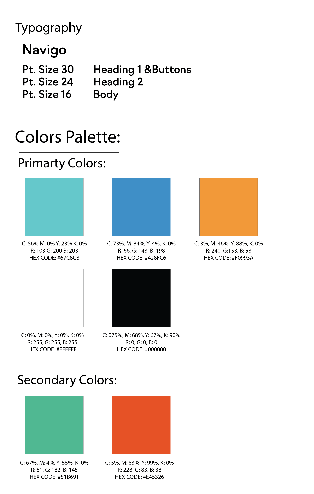
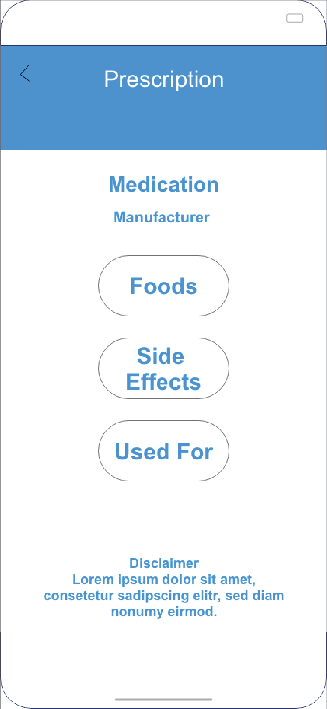
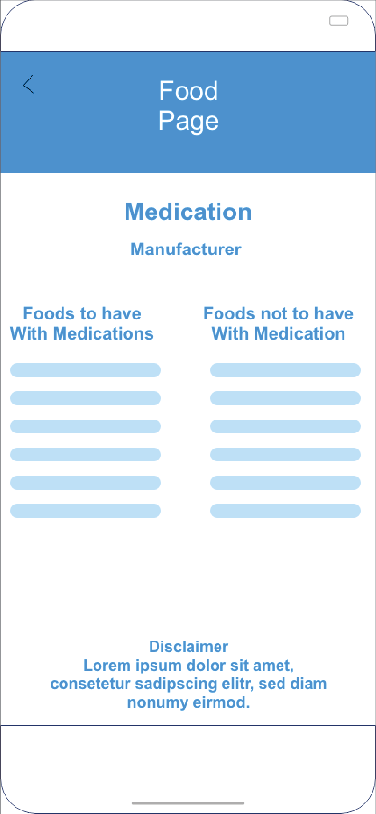
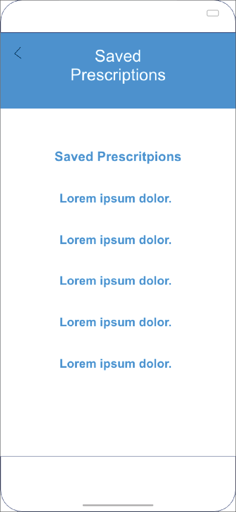
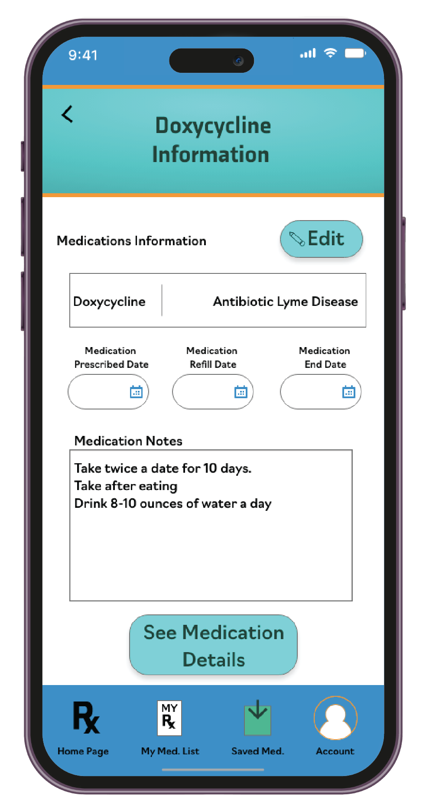
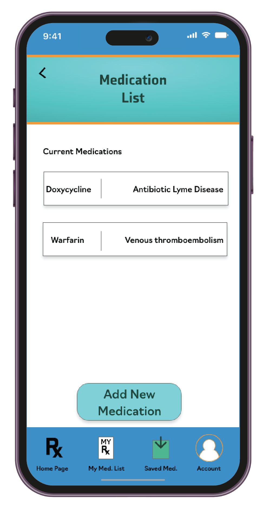
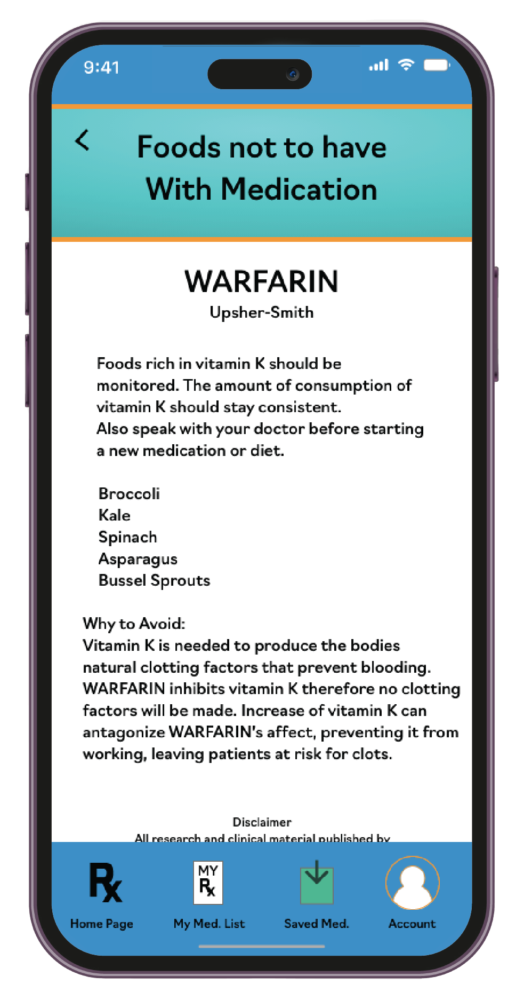
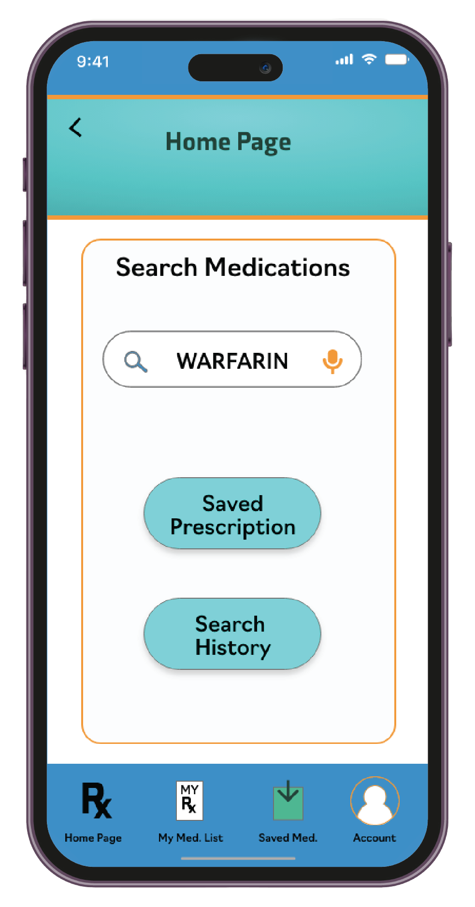
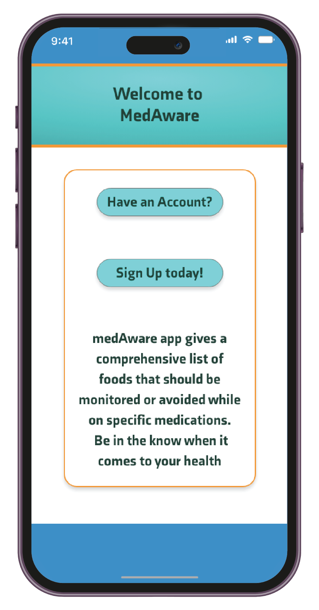
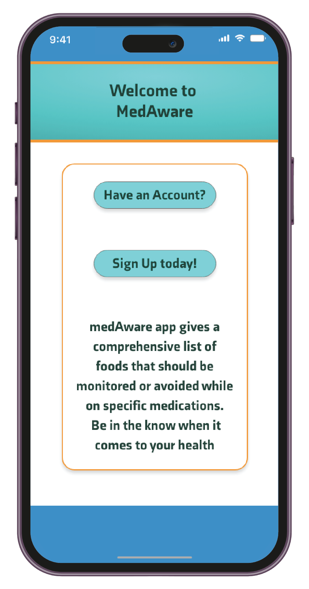

UX/UI Process:
Research:
During my initial research, I interviewed multiple individuals who are care givers to family members, or
work in the at home nursing industry. Many of these interviewees stressed, that the interface of the app
needs to be large enough for them to read, easily understandable, and ‘not fussy’ to use.

Interface Design:
The color scheme of the app followed the colors of pharmacies, and many
medical
professions. Teal, blue, orange white, and black are the primaries. Secondary Colors consist of green
and red.
For the typography, Navigo was chosen. Because this typeface is thicker, it is easier for users to read.
Black was used for the type face to encourage enough contrast for users to easily read the medical
information they are looking up.
Buttons are large so users recognize them and help with touch. Button shape is maintained is the same
throughout the entire app to help with the consistency of user interactions and navigation.
Lo-fi Wireframes
In the lo-fi stage of wireframing, I kept in mind the age range for this app is wide, and
technological gaps needed to be bridged for all users to have an intuitive and enjoyable user
experience. Clearly organized information was crucial for the success of the app’s interface and
usability.







Hi-fi Wireframes:
In the hi-fi wireframing stage, we prioritized micro-interactions like voice-to-text input, task-saving,
and smooth transitions between app screens. These micro-interactions significantly improved the user
experience, adding convenience, intuitiveness, and immediate feedback. User testing confirmed their
positive impact on creating a responsive and user-centric app.
What's Next for MedAware?
In the future, we would like to expand this app so people can compile a
list of currently prescribed medications and review a full list of foods to
avoid. The ability to link this app to local pharmacies for alerts when medations are ready for pick up.
Collaborating with Clemencia, we harnessed this valuable information to develop an intuitive mobile
application. This app serves as a comprehensive resource, offering individuals a deeper
understanding of which foods to carefully consider or keep an eye on. Whether individuals are
proactively managing their dietary choices or assisting others in doing so, our app provides
valuable insights. It's important to note that we recommend all users consult with their healthcare
provider before initiating any new medication or dietary regimen, ensuring their health and
well-being are prioritized.
 
